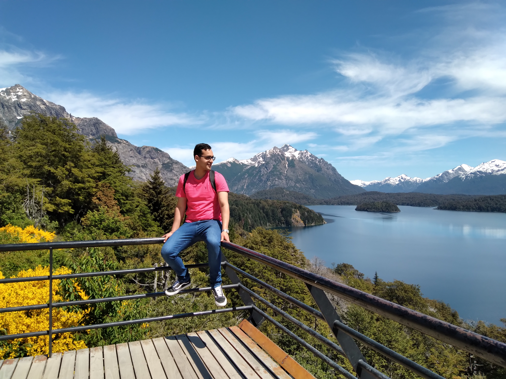

Catedral Nuestra Señora del Nahuel Huapi
1er dia en la ciudad de San Carlos de Bariloche

Al llegar al primer dia de nuestra luna de miel, al frente del hotel estaba una linda capilla muy "instagramiable" pues tomarse una foto seria algo muy bueno
¿Que opinas al respecto, te hubieras tomado una foto en esta linda capilla catolica?
Punto Panoramico - Circuito Chico
3er dia de luna de miel

Si algo me gusto mucho de este viaje fue pasar por el famoso "Circuito Chico" un paseo lleno de hermosas montañas nevadas y un asombro aire fresco.
No podia no tomarme una foto normal, tenia que darle un toque especial asi que me pense: ¡Tómame una foto como que no te estoy viendo!
Parroquia San Eduardo
3er dia de luna de miel

Me di cuenta que muchos de los puntos turisticos de bariloche tienen una capilla catolica, esta en particular estaba cerrada y arriba de un cerro.
Al bajar las escaleras del cerro, se puede ver el lago el cual tiene un puerto llamado: "Puerto Pañuelo". Desde ese puerto se puede ir a la isla victoria un lugar que me falto visitar,
ademas se puede tambien tomar un barco que hace un paseo cerca de Chile. Estoy muy animado por volver a ir y hacer este paseo.
Si viajaras a bariloche hoy ¿A donde irias? te dejo en el pie de pagina mi email para que me contactes a traves de un correo electronico, solo tenes que pinchar en el ¿Que esperas? Si tu historia me cautiva ire a visitar el lugar que querias ¡Vamos, solo hazlo!